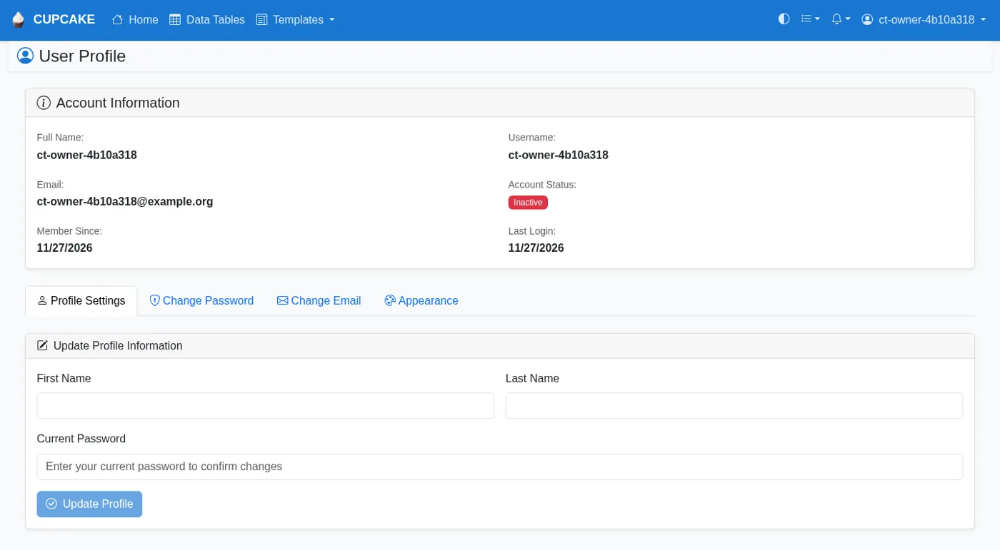
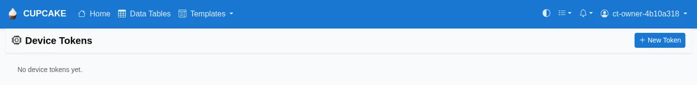

Profile
User Profile shows your account and changes your name, password and email address; each change asks for your current password, and a new email address is confirmed by email.

Appearance chooses the theme: Default, E-Ink for e-ink displays, or Stylized Sci-Fi Compact. Light or dark mode is switched in the navigation bar.
Device tokens
A device token lets a device, such as a lab display, use Cupcake Vanilla as you without your password.

New Token creates one with a label, a description, read-only or read and write access, and an optional expiry date. Copy the token when it is shown: it is not shown again. Rotate token replaces a token, and Delete removes it.